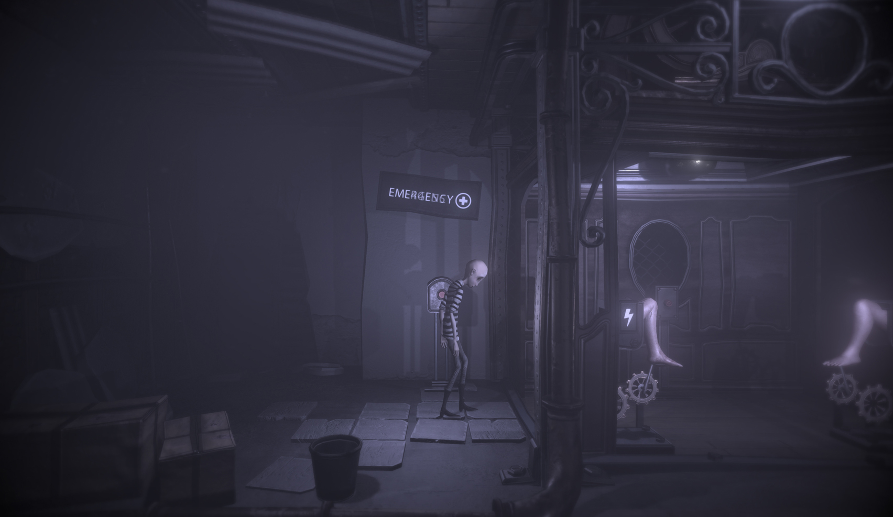

Don't Lose Faith is a interactive story game, based in a world called the Below. The Below is a arid, dark, and scary place where monsters go to hide from the monsters that slay in the Above. After a series of unfortunate events, you have foudn yourself in this place without knowing how or why. Your goal is to leave this horrid and hannus place, and reunite with the world you saw yourself in. You meet many other helpless souls and monsters, giving them encouragement and enlightenment on the way. Then, you realize that you are their savior and you must save them from the monsters contained in the Above. Using puzzles, combat, and perseverance, you will find many different unique ways to beat them. In a world of beautiful characters, and a dark, unfamiliar atmosphere and location, this game will truly make sure you Don't Lose Faith.